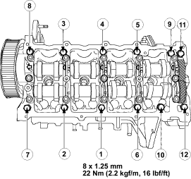

Special Tools Required
- Lever camshaft sub gear 5-8840-9049-0
- Installer camshaft oil seal 5-8840-9051-0
Camshaft carrier installation
- Install the camshaft carrier with new gasket.
- Tighten bolts with tightening order as in illustration.
Torque:
22 Nm (2.2 kgf/m, 16 lbf/ft)

Camshaft Installation
- Before reassembling the exhaust camshaft, the sub gear (A) teeth surface must be aligned to the exhaust camshaft main gear (B) teeth surface using special tool (C) (5-8840-9049-0) and connected to the sub gear and main gear with pin (D).

- Clean sealing surface and remove the residual sealant.
- Check camshaft and bearing bracket for wear and replace if necessary.
- Apply engine oil to camshaft journals.
- Install camshafts in camshaft carrier.
- When installing the camshafts, it must be ensured that the mark (A) on the exhaust camshaft gear align between both marks (B) on the intake camshaft gear and that the marks are about level with the upper edge of the camshaft carrier.

- Apply a bead of surface liquid gasket to sealing surfaces (A) of 1st camshaft bearing bracket.